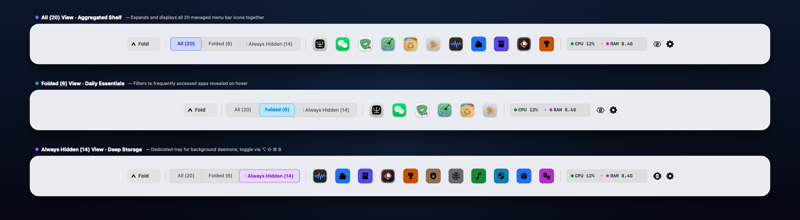

Clean up your Mac menu bar with elegance.
Intelligently hide, tier, and organize menu bar items with instant hover drawers, multi-display support, and notch protection.
macOS 12.0+

What it does
- 3-Tier Hierarchy: Categorize apps into Always Visible, Auto Hide, and Always Hidden with simple controls.
- Silky Hover & Click Drawers: Reveal hidden icons smoothly on cursor hover or click, powered by native spring animations.
- Display Notch Collision Protection: Automatically prevents overflowing menu bar items from disappearing behind the camera notch.
- Multi-Display Memory: Seamlessly adapts item layouts and preferences across multiple monitors and external displays.
- 100% Zero-Permission & Local-First: Zero system permissions required (no Accessibility, no Screen Recording). Zero network connections, fully sandboxed offline security.
Before you start
Compatible with macOS 12.0 or later (optimized for macOS 14 Sonoma and macOS 15 Sequoia). Engineered with a Zero-Permission architecture — does not require Accessibility, Screen Recording, or any special system privileges. Runs safely out of the box in the macOS App Sandbox.
优雅整理与折叠 Mac 菜单栏图标。
智能分级收纳与折叠菜单栏图标，支持悬停快速唤起抽屉、刘海屏防遮挡保护与多显示器独立记忆。
macOS 12.0+
可以做什么
- 三阶分级收纳：自由将应用图标归类为“常驻”、“折叠收纳”与“完全隐藏”，告别拥挤杂乱的菜单栏。
- 丝滑悬停抽屉：鼠标悬停或轻点即可瞬间展开隐藏托盘，原生弹簧物理动效丝滑自然。
- 刘海屏防遮挡保护：智能计算图标排列边界，杜绝图标溢出被屏幕顶部刘海遮挡丢失。
- 多显示器独立记忆：自动适配外接显示器分辨率与不同屏幕的菜单栏空间。
- 100% 零系统权限与纯净隐私：全架构零权限（无需辅助功能、无需屏幕录制），零网络请求、零追踪，完全离线沙盒安全运行。
使用前了解
兼容 macOS 12.0 及更高版本（针对 macOS 14 Sonoma 及 macOS 15 Sequoia 深度优化）。采用领先的零系统权限架构 —— 无需辅助功能授权、无需屏幕录制权限，更无系统权限弹窗打扰，开箱即用，纯净安全。
Mac メニューバーをエレガントに整理・非表示。
メニューバーのアイコンを賢く3階層に整理。ホバー展開ドロワー、ノッチ遮断防止、マルチディスプレイ独立記憶に対応。
macOS 12.0+
主な機能
- 3階層のスマート整理：「常時表示」「自動格納」「完全非表示」に簡単分類。
- 滑らかなホバー展開ドロワー：マウスを近づけるかクリックするだけで隠れたアイコンが滑らかに展開。
- ノッチ遮断防止：アイコンが増えてもカメラのノッチ下に隠れて操作不能になるのを自動防止。
- マルチディスプレイ対応：外部モニター接続時も各画面の配置と設定を自動維持。
- 100% ゼロ権限＆ローカル完結：アクセシビリティや画面収録などの権限要求はゼロ。通信なし・追跡なし、安心の完全オフライン動作。
ご利用の前に
macOS 12.0 以降に対応。システム権限一切不要 — アクセシビリティや画面収録の権限を一切要求せず、Mac App Sandbox 内で安全に即座にご利用いただけます。
Mac 메뉴 막대를 깔끔하고 우아하게 정리하세요.
메뉴 막대 아이콘을 3단계로 스마트하게 분류 및 숨김 처리합니다. 즉각적인 호버 서랍, 노치 가림 방지, 다중 모니터 지원 탑재.
macOS 12.0+
주요 기능
- 3단계 스마트 계층: 항상 표시, 자동 접기, 완전 숨김으로 복잡한 메뉴 막대를 체계적으로 정리합니다.
- 부드러운 호버 & 클릭 서랍: 마우스를 올리거나 클릭하면 숨겨진 아이콘 서랍이 부드럽게 펼쳐집니다.
- 노치 가림 방지: 아이콘이 카메라 노치 뒤로 사라져 클릭하지 못하는 문제를 자동 방지합니다.
- 다중 모니터 독립 기억: 여러 외장 디스플레이 환경에서도 각 화면의 레이아웃을 완벽하게 유지합니다.
- 100% 무권한(Zero-Permission) & 로컬 우선: 손쉬운 사용(Accessibility)이나 화면 기록 등 민감한 시스템 권한 일절 불필요. 네트워크 요청 및 추적 없는 안전한 오프라인 샌드박스 실행.
사용 전 안내
macOS 12.0 이상 호환. 시스템 권한 일절 불필요 — 손쉬운 사용 권한 승인이나 팝업창 없이 macOS 앱 샌드박스에서 즉시 안전하게 실행됩니다.
Bringen Sie Eleganz und Ordnung in Ihre Mac-Menüleiste.
Menüleistensymbole intelligent ausblenden und organisieren. Mit blitzschnellem Hover-Drawer, Notch-Kollisionsschutz und Multi-Monitor-Unterstützung.
macOS 12.0+
Funktionsübersicht
- 3-Stufen-Hierarchie: Immer sichtbar, Automatisch einklappen oder Dauerhaft verstecken.
- Sanfter Hover-Drawer: Symbole erscheinen nahtlos beim Überfahren mit dem Mauszeiger mit nativer Federanimation.
- Notch-Schutz: Verhindert zuverlässig, dass Symbole hinter der MacBook-Kamera-Notch verschwinden.
- Multi-Display-Unterstützung: Erkennt externe Bildschirme und passt die Menüleiste automatisch an.
- 100% Zero-Permission & Local-First: Keine Berechtigungen für Bedienungshilfen oder Bildschirmaufnahmen erforderlich. Vollständig offline.
Vor dem Start
Kompatibel mit macOS 12.0 oder neuer. Keine Systemberechtigungen erforderlich — läuft ohne Bedienungshilfen- oder Bildschirmaufnahme-Berechtigungen direkt in der sicheren macOS Sandbox.
Organisez et masquez élégamment la barre de menus de votre Mac.
Classez intelligemment vos icônes avec tiroir au survol, protection contre l'encoche et prise en charge multi-écrans.
macOS 12.0+
Ce qu'elle fait
- Hiérarchie à 3 niveaux : Toujours visible, Masquage automatique ou Toujours masqué.
- Tiroir fluide au survol ou au clic : Affichez instantanément vos icônes grâce à des animations physiques douces.
- Protection anti-encoche : Empêche vos icônes de déborder et de disparaître derrière l'encoche de l'écran du MacBook.
- Mémoire multi-écrans : Mémorise et adapte indépendamment vos préférences sur chaque moniteur.
- 100% Zéro Autorisation & Local-First : Zéro autorisation requise (ni accessibilité, ni enregistrement d'écran). Confidentialité totale hors ligne.
Avant de commencer
Compatible avec macOS 12.0 ou ultérieur. Zéro autorisation système requise — fonctionne sans autorisation d'accessibilité ni d'enregistrement d'écran dans le bac à sable macOS sécurisé.
Organiza y oculta elegantemente la barra de menús de tu Mac.
Oculta y clasifica iconos de forma inteligente con cajón desplegable al pasar el ratón, protección contra el notch y compatibilidad multipantalla.
macOS 12.0+
Qué hace
- Organización en 3 niveles: Siempre visible, Ocultación automática y Siempre oculto.
- Cajón fluido al pasar el cursor: Despliegue instantáneo con suaves animaciones de resorte nativas.
- Protección contra el notch del MacBook: Evita que los iconos desborden y queden ocultos detrás de la cámara.
- Memoria multipantalla: Adapta el espacio y la configuración a cada monitor externo.
- 100% Cero Permisos & Local-First: Sin permisos de accesibilidad ni grabación de pantalla. Totalmente seguro sin conexión.
Antes de empezar
Compatible con macOS 12.0 o posterior. Cero permisos del sistema requeridos — opera sin permisos de accesibilidad ni grabación de pantalla dentro del sandbox seguro de macOS.
Organize e oculte com elegância a barra de menus do seu Mac.
Organize e recolha ícones da barra de menus de forma inteligente, com gaveta ao passar o mouse, proteção contra o notch e suporte a múltiplos monitores.
macOS 12.0+
O que ele faz
- Hierarquia de 3 níveis: Sempre visível, Ocultação automática e Sempre oculto.
- Gaveta suave ao passar o cursor ou clicar: Revelação instantânea com animações de mola nativas.
- Proteção contra o notch do MacBook: Evita que os ícones fiquem escondidos atrás do recorte da câmera.
- Memória de múltiplos monitores: Ajuste automático independente para cada tela externa.
- 100% Zero Permissões & Local-First: Sem permissões de acessibilidade nem gravação de tela. Operação estritamente local e segura.
Antes de começar
Compatível com macOS 12.0 ou posterior. Zero permissões do sistema necessárias — opera sem permissões de acessibilidade ou gravação de tela no sandbox seguro do macOS.